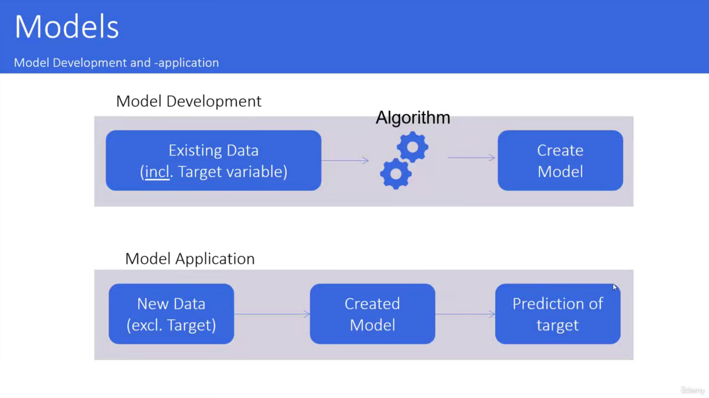
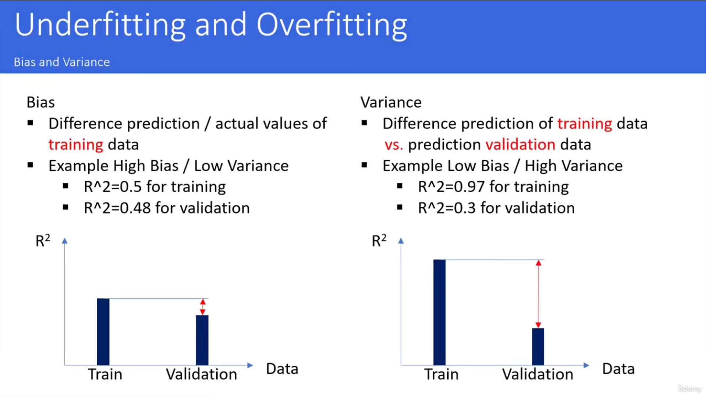
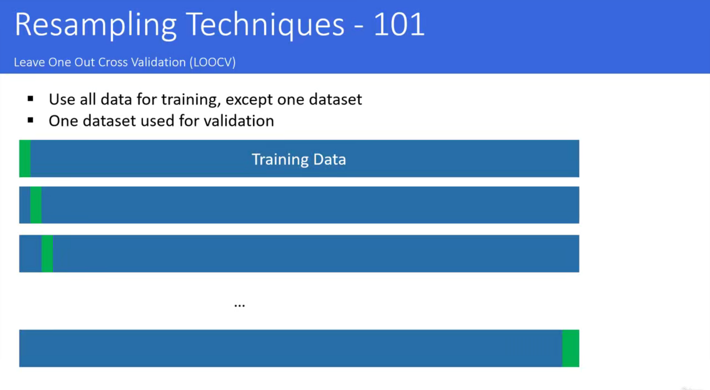
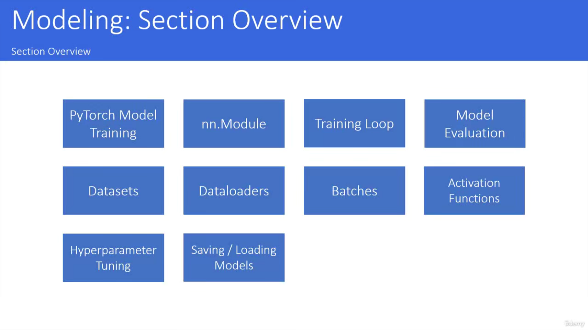
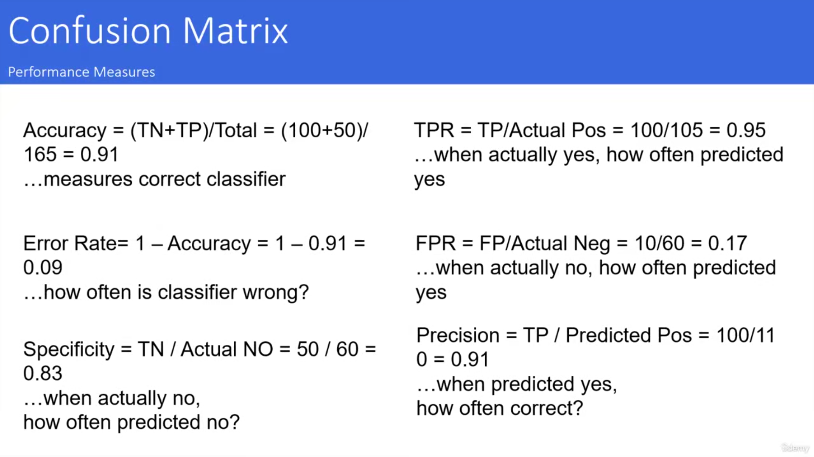

01 - Course Overview _ System Setup
001 Course Overview
002 PyTorch Introduction
003 System Setup

004 How to Get the Course Material
006 Setting up the conda environment
name: pytorch
channels:
- pytorch
- conda-forge
- anaconda
- defaults
dependencies:
- asttokens=2.0.5=pyhd3eb1b0_0
- backcall=0.2.0=pyhd3eb1b0_0
- blas=1.0=mkl
- bottleneck=1.3.4=py310h9128911_0
- brotli=1.0.9=ha925a31_2
- brotlipy=0.7.0=py310h2bbff1b_1002
- bzip2=1.0.8=he774522_0
- ca-certificates=2022.5.18.1=h5b45459_0
- certifi=2022.5.18.1=py310h5588dad_0
- cffi=1.15.0=py310h2bbff1b_1
- charset-normalizer=2.0.4=pyhd3eb1b0_0
- colorama=0.4.4=pyhd3eb1b0_0
- cpuonly=2.0=0
- cryptography=37.0.1=py310h21b164f_0
- cycler=0.11.0=pyhd3eb1b0_0
- debugpy=1.5.1=py310hd77b12b_0
- decorator=5.1.1=pyhd3eb1b0_0
- detecto=1.2.2=pyhd8ed1ab_0
- eigen=3.4.0=h2d74725_0
- entrypoints=0.4=py310haa95532_0
- executing=0.8.3=pyhd3eb1b0_0
- fonttools=4.25.0=pyhd3eb1b0_0
- freetype=2.10.4=hd328e21_0
- glib=2.69.1=h5dc1a3c_1
- gst-plugins-base=1.18.5=h9e645db_0
- gstreamer=1.18.5=hd78058f_0
- hdf5=1.10.6=nompi_he0bbb20_101
- icc_rt=2019.0.0=h0cc432a_1
- icu=58.2=vc14hc45fdbb_0
- idna=3.3=pyhd3eb1b0_0
- intel-openmp=2021.4.0=haa95532_3556
- ipykernel=6.9.1=py310haa95532_0
- ipython=8.3.0=py310haa95532_0
- jedi=0.18.1=py310haa95532_1
- joblib=1.1.0=pyhd3eb1b0_0
- jpeg=9e=h2bbff1b_0
- jupyter_client=7.2.2=py310haa95532_0
- jupyter_core=4.10.0=py310haa95532_0
- kiwisolver=1.3.1=py310hd77b12b_0
- libffi=3.4.2=h604cdb4_1
- libiconv=1.17=h8ffe710_0
- libogg=1.3.4=h8ffe710_1
- libpng=1.6.37=h2a8f88b_0
- libprotobuf=3.20.1=h23ce68f_0
- libtiff=4.2.0=he0120a3_1
- libuv=1.40.0=he774522_0
- libvorbis=1.3.7=h0e60522_0
- libwebp=1.2.2=h2bbff1b_0
- libwebp-base=1.2.2=h8ffe710_1
- lz4-c=1.9.3=h2bbff1b_1
- matplotlib=3.5.1=py310haa95532_1
- matplotlib-base=3.5.1=py310hd77b12b_1
- matplotlib-inline=0.1.2=pyhd3eb1b0_2
- mkl=2021.4.0=haa95532_640
- mkl-service=2.4.0=py310h2bbff1b_0
- mkl_fft=1.3.1=py310ha0764ea_0
- mkl_random=1.2.2=py310h4ed8f06_0
- munkres=1.1.4=py_0
- nest-asyncio=1.5.5=py310haa95532_0
- numexpr=2.8.1=py310hb57aa6b_1
- numpy=1.21.5=py310h6d2d95c_3
- numpy-base=1.21.5=py310h206c741_3
- opencv=4.5.5=py310h42e1cb5_0
- openssl=1.1.1o=h8ffe710_0
- packaging=21.3=pyhd3eb1b0_0
- pandas=1.4.2=py310hd77b12b_0
- parso=0.8.3=pyhd3eb1b0_0
- pcre=8.45=h0e60522_0
- pickleshare=0.7.5=pyhd3eb1b0_1003
- pillow=9.0.1=py310hdc2b20a_0
- pip=21.2.4=py310haa95532_0
- prompt-toolkit=3.0.20=pyhd3eb1b0_0
- pure_eval=0.2.2=pyhd3eb1b0_0
- pycparser=2.21=pyhd3eb1b0_0
- pygments=2.11.2=pyhd3eb1b0_0
- pyopenssl=22.0.0=pyhd3eb1b0_0
- pyparsing=3.0.4=pyhd3eb1b0_0
- pyqt=5.9.2=py310hd77b12b_6
- pysocks=1.7.1=py310haa95532_0
- python=3.10.4=hbb2ffb3_0
- python-dateutil=2.8.2=pyhd3eb1b0_0
- python_abi=3.10=2_cp310
- pytorch=1.11.0=py3.10_cpu_0
- pytorch-mutex=1.0=cpu
- pytz=2021.3=pyhd3eb1b0_0
- pywin32=302=py310h2bbff1b_2
- pyzmq=22.3.0=py310hd77b12b_2
- qt=5.9.7=vc14h73c81de_0
- requests=2.27.1=pyhd3eb1b0_0
- scikit-learn=1.0.2=py310h4ed8f06_0
- scipy=1.7.3=py310h6d2d95c_0
- seaborn=0.11.2=pyhd3eb1b0_0
- setuptools=61.2.0=py310haa95532_0
- sip=4.19.13=py310hd77b12b_0
- six=1.16.0=pyhd3eb1b0_1
- sqlite=3.38.3=h2bbff1b_0
- stack_data=0.2.0=pyhd3eb1b0_0
- threadpoolctl=2.2.0=pyh0d69192_0
- tk=8.6.12=h2bbff1b_0
- torchaudio=0.11.0=py310_cpu
- torchvision=0.12.0=py310_cpu
- tornado=6.1=py310h2bbff1b_0
- tqdm=4.64.0=pyhd8ed1ab_0
- traitlets=5.1.1=pyhd3eb1b0_0
- typing_extensions=4.1.1=pyh06a4308_0
- tzdata=2022a=hda174b7_0
- urllib3=1.26.9=py310haa95532_0
- vc=14.2=h21ff451_1
- vs2015_runtime=14.27.29016=h5e58377_2
- wcwidth=0.2.5=pyhd3eb1b0_0
- wheel=0.37.1=pyhd3eb1b0_0
- win_inet_pton=1.1.0=py310haa95532_0
- wincertstore=0.2=py310haa95532_2
- xz=5.2.5=h8cc25b3_1
- zlib=1.2.12=h8cc25b3_2
- zstd=1.5.2=h19a0ad4_0
prefix: C:\anaconda\envs\pytorch
conda env create -f pytorch.yml
008 How to work with the course
02 - Machine Learning
001 Artificial Intelligence (101)
002 Machine Learning (101)
003 Machine Learning Models (101)
拿原料进行不同配比的实验, 最后找出和想要的味道最相近的组合">

03 - Deep Learning Introduction
001 Deep Learning General Overview
002 Deep Learning Modeling 101
003 Performance
004 From Perceptron to Neural Network
005 Layer Types
006 Activation Functions
007 Loss Functions
008 Optimizers
04 - Model Evaluation
001 Underfitting Overfitting (101)
高偏差意味着模型拟合不好, 性能指标相对低, 但是方差通常小

002 Train Test Split (101)
003 Resampling Techniques (101)

05 - Neural Network from Scratch (opt. but highly recommended)
001 Section Overview
002 NN from Scratch (101)
003 Calculating the dot-product (Coding)
# %% packages
import numpy as np
# %%
X = [0, 1]
w1 = [2, 3]
w2 = [0.4, 1.8]
# %% Question: which weight is more similar to input data X
# %% Question: 那个权重和x更接近
dot_X_w1 = X[0] * w1[0] + X[1] * w1[1]
print(dot_X_w1) # 3
dot_X_w2 = X[0] * w2[0] + X[1] * w2[1]
print(dot_X_w2) # 1.8
# %% np.dot 复现我们上面的操作
print(np.dot(X, w1)) # 3
print(np.dot(X, w2)) # 1.8
# %% 求出来的值越大, 与X的相似性就越大
004 NN from Scratch (Data Prep)
# %% packages
import numpy as np
import pandas as pd
import seaborn as sns
from sklearn.preprocessing import StandardScaler
from sklearn.model_selection import train_test_split
from sklearn.metrics import confusion_matrix
# %% data prep
# source: https://www.kaggle.com/datasets/rashikrahmanpritom/heart-attack-analysis-prediction-dataset
df = pd.read_csv('../heart.csv')
df.head()
# %% separate independent / dependent features
# 取维度0的所有数据(即每行), 取第二维度(即所有列)中columns不为output的
X = np.array(df.loc[:, df.columns != 'output'])
# output是target(目标值)
y = np.array(df['output'])
print(f"X: {X.shape}, y: {y.shape}")
# %% Train / Test Split
# 数据集划分
X_train, X_test, y_train, y_test = train_test_split(X, y, test_size=0.2, random_state=123)
# %% scale the data
scaler = StandardScaler()
# 根据均值和方差，将矩阵转标准化
X_train_scale = scaler.fit_transform(X_train)
# 求均值和方差并标准化矩阵
X_test_scale = scaler.transform(X_test)
# %% network class
# %% Hyper parameters
# %% model instance and training
# %% check losses
# %% iterate over test data
# %% Calculate Accuracy
# %% Baseline Classifier
# %% Confusion Matrix
005 NN from Scratch Modeling init function
# %% network class
class NeuralNetworkFromScratch:
def __init__(self, LR, X_train, y_train, X_test, y_test):
"""
初始化
:param LR: 学习率
"""
# 随机初始化权重
self.w = np.random.randn(X_train.shape[1])
# 随机初始化偏置
self.b = np.random.randn()
self.LR = LR
self.X_train = X_train
self.y_train = y_train
self.X_test = X_test
self.y_test = y_test
# 记录损失值
self.L_train = []
self.L_test = []
006 NN from Scratch Modeling Helper Functions
class NeuralNetworkFromScratch:
### __init__
def activation(self, x):
"""
激活函数sigmoid
"""
return 1 / (1 + np.exp(-x))
def dactivation(self, x):
"""
sigmoid的导数(梯度)
"""
return self.activation(x) * (1 - self.activation(x))
007 NN from Scratch Modeling forward function
# %% network class
class NeuralNetworkFromScratch:
###
def forward(self, X):
"""
前向传播
前向传播通过训练数据和权重参数计算输出结果
"""
hidden_1 = np.dot(X, self.w) + self.b
activate_1 = self.activation(hidden_1)
return activate_1
008 NN from Scratch Modeling backward function
# %% network class
class NeuralNetworkFromScratch:
###
def backward(self, X, y_true):
"""
反向传播
反向传播通过导数链式法则计算损失函数对各参数的梯度，并根据梯度进行参数的更新
"""
# calc gradients
hidden_1 = np.dot(X, self.w) + self.b
# 模型计算出预测值
y_pred = self.forward(X)
dL_dpred = 2 * (y_pred - y_true)
dpred_dhidden1 = self.dactivation(hidden_1)
dhidden1_db = 1
dhidden1_dw = X
dL_db = dL_dpred * dpred_dhidden1 * dhidden1_db
dL_dw = dL_dpred * dpred_dhidden1 * dhidden1_dw
return dL_db, dL_dw
009 NN from Scratch Modeling optimizer function
# %% network class
class NeuralNetworkFromScratch:
###
def optimizer(self, dL_db, dL_dw):
"""
优化器, 更新模型参数
"""
# update weights
self.b = self.b - dL_db * self.LR
self.w = self.w - dL_dw * self.LR
010 NN from Scratch Modeling train function
# %% network class
class NeuralNetworkFromScratch:
###
def train(self, ITERATIONS):
for i in range(ITERATIONS):
# random position
random_pos = np.random.randint(len(self.X_train))
# forward pass
y_train_true = self.y_train[random_pos]
y_train_pred = self.forward(self.X_train[random_pos])
# calculate training losses
L = np.sum(np.square(y_train_pred - y_train_true)) # (y_p-y_t) ^ 2
self.L_train.append(L)
# calculate gradients
dL_db, dL_dw = self.backward(self.X_train[random_pos], self.y_train[random_pos])
# update weights
self.optimizer(dL_db, dL_dw)
# calc error for test data
L_sum = 0
for j in range(len(self.X_test)):
y_true = self.y_test[j]
y_pred = self.forward(self.X_test[j])
L_sum += np.square(y_pred - y_true)
self.L_test.append(L_sum)
return "training successful"
011 NN from Scratch Model Training
# %% Hyper parameters
LR = 0.1
ITERATIONS = 1000
# %% model instance and training
nn = NeuralNetworkFromScratch(LR, X_train=X_train_scale, X_test=X_test_scale, y_train=y_train, y_test=y_test)
nn.train(ITERATIONS=ITERATIONS)
012 NN from Scratch Model Evaluation

# %% packages
import numpy as np
import pandas as pd
import seaborn as sns
from sklearn.preprocessing import StandardScaler
from sklearn.model_selection import train_test_split
from sklearn.metrics import confusion_matrix
# %% data prep
# source: https://www.kaggle.com/datasets/rashikrahmanpritom/heart-attack-analysis-prediction-dataset
df = pd.read_csv('../heart.csv')
df.head()
# %% separate independent / dependent features
# 取维度0的所有数据(即每行), 取第二维度(即所有列)中columns不为output的
X = np.array(df.loc[:, df.columns != 'output'])
# output是target(目标值)
y = np.array(df['output'])
print(f"X: {X.shape}, y: {y.shape}")
# %% Train / Test Split
# 数据集划分
X_train, X_test, y_train, y_test = train_test_split(X, y, test_size=0.2, random_state=123)
# %% scale the data
scaler = StandardScaler()
# 根据均值和方差，将矩阵转标准化
X_train_scale = scaler.fit_transform(X_train)
# 求均值和方差并标准化矩阵
X_test_scale = scaler.transform(X_test)
# %% network class
class NeuralNetworkFromScratch:
def __init__(self, LR, X_train, y_train, X_test, y_test):
"""
初始化
:param LR: 学习率
"""
# 随机初始化权重
self.w = np.random.randn(X_train.shape[1])
# 随机初始化偏置
self.b = np.random.randn()
self.LR = LR
self.X_train = X_train
self.y_train = y_train
self.X_test = X_test
self.y_test = y_test
# 记录损失值
self.L_train = []
self.L_test = []
def activation(self, x):
"""
激活函数sigmoid
"""
return 1 / (1 + np.exp(-x))
def dactivation(self, x):
"""
sigmoid的导数(梯度)
"""
return self.activation(x) * (1 - self.activation(x))
def forward(self, X):
"""
前向传播
前向传播通过训练数据和权重参数计算输出结果
"""
hidden_1 = np.dot(X, self.w) + self.b
activate_1 = self.activation(hidden_1)
return activate_1
def backward(self, X, y_true):
"""
反向传播
反向传播通过导数链式法则计算损失函数对各参数的梯度，并根据梯度进行参数的更新
"""
# calc gradients
hidden_1 = np.dot(X, self.w) + self.b
# 模型计算出预测值
y_pred = self.forward(X)
dL_dpred = 2 * (y_pred - y_true)
dpred_dhidden1 = self.dactivation(hidden_1)
dhidden1_db = 1
dhidden1_dw = X
dL_db = dL_dpred * dpred_dhidden1 * dhidden1_db
dL_dw = dL_dpred * dpred_dhidden1 * dhidden1_dw
return dL_db, dL_dw
def optimizer(self, dL_db, dL_dw):
"""
优化器, 更新模型参数
"""
# update weights
self.b = self.b - dL_db * self.LR
self.w = self.w - dL_dw * self.LR
def train(self, ITERATIONS):
for i in range(ITERATIONS):
# random position
random_pos = np.random.randint(len(self.X_train))
# forward pass
y_train_true = self.y_train[random_pos]
y_train_pred = self.forward(self.X_train[random_pos])
# calculate training losses
L = np.sum(np.square(y_train_pred - y_train_true)) # (y_p-y_t) ^ 2
self.L_train.append(L)
# calculate gradients
dL_db, dL_dw = self.backward(self.X_train[random_pos], self.y_train[random_pos])
# update weights
self.optimizer(dL_db, dL_dw)
# calc error for test data
L_sum = 0
for j in range(len(self.X_test)):
y_true = self.y_test[j]
y_pred = self.forward(self.X_test[j])
L_sum += np.square(y_pred - y_true)
self.L_test.append(L_sum)
return "training successful"
# %% Hyper parameters
LR = 0.1
ITERATIONS = 1000
# %% model instance and training
nn = NeuralNetworkFromScratch(LR, X_train=X_train_scale, X_test=X_test_scale, y_train=y_train, y_test=y_test)
nn.train(ITERATIONS=ITERATIONS)
# %% check losses
fig = sns.lineplot(x=list(range(len(nn.L_test))), y=nn.L_test)
fig.get_figure().savefig("./losses.png", dpi=400) # 保存图片
# %% iterate over test data
total = X_test_scale.shape[0]
correct = 0
y_preds = []
for i in range(total):
y_true = y_test[i]
y_pred = np.round(nn.forward(X_test_scale[i]))
y_preds.append(y_pred)
correct += 1 if y_true == y_pred else 0
# %% Calculate Accuracy
acc = correct / total
print(acc) # 0.7049180327868853
# %% Baseline Classifier
from collections import Counter
# 统计y_test里的数据
print(Counter(y_test)) # Counter({1: 31, 0: 30}) -> acc: 0.5xxx
# %% Confusion Matrix 混淆矩阵
cm = confusion_matrix(y_true=y_test, y_pred=y_preds)
# [[26 4] 真阴性, 假阴性
# [ 8 23]] 真阳性, 假阳性
print(cm)
06 - Tensors
001 Section Overview
002 From Tensors to Computational Graphs (101)
003 Tensor (Coding)
# %% import package
import torch
import numpy as np
import seaborn as sns
# %% create a tensor
x = torch.tensor(5.5)
# %% simple calculations
y = x + 10
print(y) # tensor(15.5000)
# %%
print(x.requires_grad) # False
# %%
x = torch.tensor(2.0, requires_grad=True)
print(x.requires_grad) # True
# %%
def y_function(val):
return (val - 3) * (val - 6) * (val - 4)
# [-10, 10]
x_range = np.linspace(0, 10, 101)
y_range = [y_function(i) for i in x_range]
fig = sns.lineplot(x=x_range, y=y_range)
fig.get_figure().savefig("./y_func.png", dpi=400)
# %%
y = (x - 3) * (x - 6) * (x - 4)
y.backward() # 自动反向传播
print(x.grad) # tensor(14.)
# %% second example
x = torch.tensor(1.0, requires_grad=True)
y = x ** 3
z = 5 * x - 4
z.backward()
print(x.grad) # tensor(5.)
# %% more complex example
x11 = torch.tensor(2.0, requires_grad=True)
x21 = torch.tensor(3.0, requires_grad=True)
x12 = 5 * x11 - 3 * x21
x22 = 2 * x11 ** 2 + 2 * x21
y = 4 * x12 + 3 * x22
y.backward()
print(x11.grad) # tensor(44.)
print(x21.grad) # tensor(-6.)
07 - PyTorch Modeling Introduction
001 Section Overview

002 Linear Regression from Scratch (Coding, Model Training)
# %% packages
import numpy as np
import pandas as pd
import torch
import torch.nn as nn
import seaborn as sns
# %% data import
# cars_file = 'https://gist.githubusercontent.com/noamross/e5d3e859aa0c794be10b/raw/b999fb4425b54c63cab088c0ce2c0d6ce961a563/cars.csv'
cars = pd.read_csv("cars.csv")
cars.head()
# %% visualise the model
sns.scatterplot(x='wt', y='mpg', data=cars)
sns.regplot(x='wt', y='mpg', data=cars)
# %% convert data to tensor
X_list = cars.wt.values
# 转为np array, 并重构为[x, 1]的shape (-1是自动计算出该维度的数量)
X_np = np.array(X_list, dtype=np.float32).reshape(-1, 1)
print(X_np.shape) # (32, 1)
y_list = cars.mpg.values.tolist()
# 转为tensor
X = torch.from_numpy(X_np)
y = torch.tensor(y_list)
# %% training
# 随机初始化w(权重)和b(偏置)
w = torch.rand(1, requires_grad=True, dtype=torch.float32)
b = torch.rand(1, requires_grad=True, dtype=torch.float32)
num_epochs = 1000
learning_rate = 0.001
for epoch in range(num_epochs):
for i in range(len(X)):
# forward pass
y_pred = X[i] * w + b
# calculate loss (y_pred-y_true)^2
loss_tensor = torch.pow(y_pred - y[i], 2)
# backward pass
loss_tensor.backward()
# extract losses
loss_value = loss_tensor.data[0]
# update weights and biases
# 更新参数期间不需要backward求梯度, 也不需要过去的梯度记录
with torch.no_grad():
w -= w.grad * learning_rate
b -= b.grad * learning_rate
# 清空梯度, 下次重新计算
w.grad.zero_()
b.grad.zero_()
print(loss_value)
003 Linear Regression from Scratch (Coding, Model Evaluation)
# %% check results
print(f"Weight: {w.item()}, Bias: {b.item()}")
# %%
y_pred = ((X * w) + b).detach().numpy()
sns.scatterplot(x=X_list, y=y_list)
sns.lineplot(x=X_list, y=y_pred.reshape(-1))
# %% (Statistical) Linear Regression
from sklearn.linear_model import LinearRegression
reg = LinearRegression().fit(X_np, y_list)
print(f"Slope(斜率w): {reg.coef_}, Intercept(截距b): {reg.intercept_}")
# %% create graph visualisation
# 可视化我们的模型
# make sure GraphViz is installed (https://graphviz.org/download/)
# if not computer restarted, append directly to PATH variable
import os
from torchviz import make_dot
os.environ['PATH'] += os.pathsep + 'C:/Program Files (x86)/Graphviz/bin'
make_dot(loss_tensor)
# %%
004 Model Class (Coding)
# %% packages
import numpy as np
import pandas as pd
import torch
import torch.nn as nn
import seaborn as sns
# %% data import
# cars_file = 'https://gist.githubusercontent.com/noamross/e5d3e859aa0c794be10b/raw/b999fb4425b54c63cab088c0ce2c0d6ce961a563/cars.csv'
cars = pd.read_csv("cars.csv")
cars.head()
# %% visualise the model
sns.scatterplot(x='wt', y='mpg', data=cars)
sns.regplot(x='wt', y='mpg', data=cars)
# %% convert data to tensor
X_list = cars.wt.values
X_np = np.array(X_list, dtype=np.float32).reshape(-1, 1)
y_list = cars.mpg.values
y_np = np.array(y_list, dtype=np.float32).reshape(-1, 1)
X = torch.from_numpy(X_np)
y_true = torch.from_numpy(y_np)
# %% model class
# 继承nn.Module, 表示一个神经网络
class LinearRegressionTorch(nn.Module):
def __init__(self, input_size, output_size):
super(LinearRegressionTorch, self).__init__()
self.linear = nn.Linear(input_size, output_size)
# 前向传播 -> 输入x得到预测y_pred
def forward(self, x):
out = self.linear(x)
return out
input_dim = 1
output_dim = 1
model = LinearRegressionTorch(input_dim, output_dim)
# %% Loss Function
loss_fun = nn.MSELoss()
# %% Optimizer
LR = 0.02
# SGD: 随机梯度下降（stochastic gradient descent）
optimizer = torch.optim.SGD(model.parameters(), lr=LR)
# test different values of too large 0.1 and too small 0.001
# best 0.02
# %% perform training
losses, slope, bias = [], [], []
NUM_EPOCHS = 1000
for epoch in range(NUM_EPOCHS):
# set gradients to zero
optimizer.zero_grad()
# forward pass
y_pred = model.forward(X)
# compute loss
loss = loss_fun(y_pred, y_true)
# compute gradients -> 计算梯度后面才能更新参数
loss.backward()
# update weights
optimizer.step()
# get parameters
for name, param in model.named_parameters():
if param.requires_grad:
if name == 'linear.weight':
# param.item()
slope.append(param.data.numpy()[0][0])
if name == 'linear.bias':
bias.append(param.data.numpy()[0])
# store loss
losses.append(float(loss.data))
# print loss
if epoch % 100 == 0:
print('Epoch: {}, Loss: {:4f}'.format(epoch, loss.data))
# %% visualise model training
sns.scatterplot(x=range(NUM_EPOCHS), y=losses)
# %% visualise the bias development
sns.scatterplot(x=range(NUM_EPOCHS), y=bias)
# %% visualise the slope development
sns.scatterplot(x=range(NUM_EPOCHS), y=slope)
# %% check the result
y_pred = model(X).data.numpy().reshape(-1)
sns.scatterplot(x=X_list, y=y_list)
sns.lineplot(x=X_list, y=y_pred, color='red')
# %%
005 Exercise Learning Rate and Number of Epochs
006 Solution Learning Rate and Number of Epochs
007 Batches (101)

008 Batches (Coding)
# %% packages
import graphlib
import numpy as np
import pandas as pd
import torch
import torch.nn as nn
import seaborn as sns
# %% data import
# cars_file = 'https://gist.githubusercontent.com/noamross/e5d3e859aa0c794be10b/raw/b999fb4425b54c63cab088c0ce2c0d6ce961a563/cars.csv'
cars = pd.read_csv('cars.csv')
cars.head()
# %% visualise the model
sns.scatterplot(x='wt', y='mpg', data=cars)
sns.regplot(x='wt', y='mpg', data=cars)
# %% convert data to tensor
X_list = cars.wt.values
X_np = np.array(X_list, dtype=np.float32).reshape(-1, 1)
y_list = cars.mpg.values
y_np = np.array(y_list, dtype=np.float32).reshape(-1, 1)
X = torch.from_numpy(X_np)
y_true = torch.from_numpy(y_np)
# %%
class LinearRegressionTorch(nn.Module):
def __init__(self, input_size, output_size):
super(LinearRegressionTorch, self).__init__()
self.linear = nn.Linear(input_size, output_size)
def forward(self, x):
return self.linear(x)
input_dim = 1
output_dim = 1
model = LinearRegressionTorch(input_size=input_dim, output_size=output_dim)
model.train()
# %% Mean Squared Error
loss_fun = nn.MSELoss()
# %% Optimizer
learning_rate = 0.02
# test different values of too large 0.1 and too small 0.001
# best 0.02
optimizer = torch.optim.SGD(model.parameters(), lr=learning_rate)
# %% perform training
losses = []
slope, bias = [], []
NUM_EPOCHS = 1000
BATCH_SIZE = 2
for epoch in range(NUM_EPOCHS):
# [0, X.shape[0]], 每次取BATCH_SIZE个
for i in range(0, X.shape[0], BATCH_SIZE):
# set gradients to zero
optimizer.zero_grad()
# forward pass
# y_pred = model(X)
y_pred = model(X[i:i + BATCH_SIZE])
# calculate loss
# loss = loss_fun(y_pred, y_true)
loss = loss_fun(y_pred, y_true[i:i + BATCH_SIZE])
loss.backward()
# update parameters
optimizer.step()
# get parameters
for name, param in model.named_parameters():
if param.requires_grad:
if name == 'linear.weight':
slope.append(param.data.numpy()[0][0])
if name == 'linear.bias':
bias.append(param.data.numpy()[0])
# store loss
losses.append(float(loss.data))
# print loss
if (epoch % 100 == 0):
print(f"Epoch {epoch}, Loss: {loss.data}")
# %% visualise model training
sns.scatterplot(x=range(len(losses)), y=losses)
# %% visualise the bias development
sns.lineplot(x=range(NUM_EPOCHS), y=bias)
# %% visualise the slope development
sns.lineplot(x=range(NUM_EPOCHS), y=slope)
# %% check the result
model.eval()
y_pred = [i[0] for i in model(X).data.numpy()]
y = [i[0] for i in y_true.data.numpy()]
sns.scatterplot(x=X_list, y=y)
sns.lineplot(x=X_list, y=y_pred, color='red')
# %% ERROR!!!
# From https://github.com/pytorch/pytorch/blob/2efe4d809fdc94501fc38bf429e9a8d4205b51b6/torch/utils/tensorboard/_pytorch_graph.py#L384
def _node_get(node: torch._C.Node, key: str):
"""Gets attributes of a node which is polymorphic over return type."""
sel = node.kindOf(key)
return getattr(node, sel)(key)
torch._C.Node.__getitem__ = _node_get
import hiddenlayer as hl
graph = hl.build_graph(model, X)
# %%
009 Datasets and Dataloaders (101)
010 Datasets and Dataloaders (Coding)
# %% packages
import graphlib
import numpy as np
import pandas as pd
import torch
import torch.nn as nn
import seaborn as sns
# %% data import
cars_file = 'https://gist.githubusercontent.com/noamross/e5d3e859aa0c794be10b/raw/b999fb4425b54c63cab088c0ce2c0d6ce961a563/cars.csv'
cars = pd.read_csv(cars_file)
cars.head()
# %% visualise the model
sns.scatterplot(x='wt', y='mpg', data=cars)
sns.regplot(x='wt', y='mpg', data=cars)
# %% convert data to tensor
X_list = cars.wt.values
X_np = np.array(X_list, dtype=np.float32).reshape(-1, 1)
y_list = cars.mpg.values
y_np = np.array(y_list, dtype=np.float32).reshape(-1, 1)
X = torch.from_numpy(X_np)
y_true = torch.from_numpy(y_np)
# %% malred: create dataset and dataloader
from torch.utils.data import Dataset, DataLoader
# 自定义数据集, 需要继承Dataset, 实现特定方法
class LinearRegressionDataset(Dataset):
def __init__(self, X, y):
self.X = X
self.y = y
def __len__(self):
return len(self.X)
# 从数据集取数据的方法
def __getitem__(self, idx):
return self.X[idx], self.y[idx]
# batch_size (int, optional): how many samples per batch to load (default: ``1``).
train_loader = DataLoader(dataset=LinearRegressionDataset(X_np, y_np), batch_size=2)
# %%
class LinearRegressionTorch(nn.Module):
def __init__(self, input_size, output_size):
super(LinearRegressionTorch, self).__init__()
self.linear = nn.Linear(input_size, output_size)
def forward(self, x):
return self.linear(x)
input_dim = 1
output_dim = 1
model = LinearRegressionTorch(input_size=input_dim, output_size=output_dim)
model.train()
# %% Mean Squared Error
loss_fun = nn.MSELoss()
# %% Optimizer
learning_rate = 0.02
# test different values of too large 0.1 and too small 0.001
# best 0.02
optimizer = torch.optim.SGD(model.parameters(), lr=learning_rate)
# %% malred: check trainloader returns
for i, data in enumerate(train_loader):
# data[0].shape = data[1].shape = [2,1]
print(f"{i}th batch")
print(data)
# %% perform training
losses = []
slope, bias = [], []
NUM_EPOCHS = 1000
BATCH_SIZE = 2
for epoch in range(NUM_EPOCHS):
# for i in range(0, X.shape[0], BATCH_SIZE):
for i, (X, y) in enumerate(train_loader):
# optimization
optimizer.zero_grad()
# forward pass
y_pred = model(X)
# compute loss
loss = loss_fun(y_pred, y)
losses.append(loss.item())
# backprop
loss.backward()
# update weights
optimizer.step()
# get parameters
for name, param in model.named_parameters():
if param.requires_grad:
if name == 'linear.weight':
slope.append(param.data.numpy()[0][0])
if name == 'linear.bias':
bias.append(param.data.numpy()[0])
# store loss
losses.append(float(loss.data))
# print loss
if (epoch % 100 == 0):
print(f"Epoch {epoch}, Loss: {loss.data}")
# %% visualise model training
sns.scatterplot(x=range(len(losses)), y=losses)
# %% visualise the bias development
sns.lineplot(x=range(NUM_EPOCHS), y=bias)
# %% visualise the slope development
sns.lineplot(x=range(NUM_EPOCHS), y=slope)
# %% check the result
model.eval()
y_pred = [i[0] for i in model(X).data.numpy()]
y = [i[0] for i in y_true.data.numpy()]
sns.scatterplot(x=X_list, y=y)
sns.lineplot(x=X_list, y=y_pred, color='red')
# %%
import hiddenlayer as hl
graph = hl.build_graph(model, X)
# %%
011 Saving and Loading Models (101)
012 Saving and Loading Models (Coding)
# %% packages
import numpy as np
import pandas as pd
import torch
import torch.nn as nn
from torch.utils.data import Dataset, DataLoader
import seaborn as sns
# %% data import
cars_file = 'https://gist.githubusercontent.com/noamross/e5d3e859aa0c794be10b/raw/b999fb4425b54c63cab088c0ce2c0d6ce961a563/cars.csv'
cars = pd.read_csv(cars_file)
cars.head()
# %% visualise the model
sns.scatterplot(x='wt', y='mpg', data=cars)
sns.regplot(x='wt', y='mpg', data=cars)
# %% convert data to tensor
X_list = cars.wt.values
X_np = np.array(X_list, dtype=np.float32).reshape(-1, 1)
y_list = cars.mpg.values
y_np = np.array(y_list, dtype=np.float32).reshape(-1, 1)
X = torch.from_numpy(X_np)
y_true = torch.from_numpy(y_np)
# %% Dataset and Dataloader
class LinearRegressionDataset(Dataset):
def __init__(self, X, y):
self.X = X
self.y = y
def __len__(self):
return len(self.X)
def __getitem__(self, idx):
return self.X[idx], self.y[idx]
train_loader = DataLoader(dataset=LinearRegressionDataset(X_np, y_np), batch_size=2)
# %% Model
class LinearRegressionTorch(nn.Module):
def __init__(self, input_size, output_size):
super(LinearRegressionTorch, self).__init__()
self.linear = nn.Linear(input_size, output_size)
def forward(self, x):
return self.linear(x)
input_dim = 1
output_dim = 1
model = LinearRegressionTorch(input_size=input_dim, output_size=output_dim)
model.train()
# %% Mean Squared Error
loss_fun = nn.MSELoss()
# %% Optimizer
learning_rate = 0.02
# test different values of too large 0.1 and too small 0.001
# best 0.02
optimizer = torch.optim.SGD(model.parameters(), lr=learning_rate)
# %% perform training
losses = []
slope, bias = [], []
number_epochs = 1000
for epoch in range(number_epochs):
for j, data in enumerate(train_loader):
# optimization
optimizer.zero_grad()
# forward pass
y_hat = model(data[0])
# compute loss
loss = loss_fun(y_hat, data[1])
losses.append(loss.item())
# backprop
loss.backward()
# update weights
optimizer.step()
# get parameters
for name, param in model.named_parameters():
if param.requires_grad:
if name == 'linear.weight':
slope.append(param.data.numpy()[0][0])
if name == 'linear.bias':
bias.append(param.data.numpy()[0])
# store loss
losses.append(float(loss.data))
# print loss
if (epoch % 100 == 0):
print(f"Epoch {epoch}, Loss: {loss.data}")
# %% model state dict (malred)
model.state_dict()
# %% save model state dict (malred)
torch.save(model.state_dict(), 'model_state_dict.pth')
# %% load a model (malred)
model = LinearRegressionTorch(input_size=input_dim, output_size=output_dim)
model.load_state_dict(torch.load('model_state_dict.pth'))
model.state_dict()
# %%
013 Model Training (101)
014 Hyperparameter Tuning (101)

015 Hyperparameter Tuning (Coding)
# %% packages
import numpy as np
import pandas as pd
import torch
import torch.nn as nn
from torch.utils.data import Dataset, DataLoader
import seaborn as sns
# %% data import
cars_file = 'https://gist.githubusercontent.com/noamross/e5d3e859aa0c794be10b/raw/b999fb4425b54c63cab088c0ce2c0d6ce961a563/cars.csv'
cars = pd.read_csv(cars_file)
cars.head()
# %% visualise the model
sns.scatterplot(x='wt', y='mpg', data=cars)
sns.regplot(x='wt', y='mpg', data=cars)
# %% convert data to tensor
X_list = cars.wt.values
X_np = np.array(X_list, dtype=np.float32).reshape(-1, 1)
y_list = cars.mpg.values
y_np = np.array(y_list, dtype=np.float32).reshape(-1, 1)
X = torch.from_numpy(X_np)
y_true = torch.from_numpy(y_np)
# %% Dataset and Dataloader
class LinearRegressionDataset(Dataset):
def __init__(self, X, y):
self.X = X
self.y = y
def __len__(self):
return len(self.X)
def __getitem__(self, idx):
return self.X[idx], self.y[idx]
train_loader = DataLoader(dataset=LinearRegressionDataset(X_np, y_np), batch_size=2)
# %%
class LinearRegressionTorch(nn.Module):
def __init__(self, input_size=1, output_size=1):
super(LinearRegressionTorch, self).__init__()
self.linear = nn.Linear(input_size, output_size)
def forward(self, x):
return self.linear(x)
input_dim = 1
output_dim = 1
model = LinearRegressionTorch(input_size=input_dim, output_size=output_dim)
model.train()
# %% Mean Squared Error
loss_fun = nn.MSELoss()
# %% Optimizer
learning_rate = 0.02
# test different values of too large 0.1 and too small 0.001
# best 0.02
optimizer = torch.optim.SGD(model.parameters(), lr=learning_rate)
# %% malred 网格搜索 grid search
from skorch import NeuralNetRegressor
from sklearn.model_selection import GridSearchCV
net = NeuralNetRegressor(
LinearRegressionTorch,
max_epochs=100,
lr=learning_rate,
iterator_train__shuffle=True
)
# %% malred
net.set_params(train_split=False, verbose=0)
params = {
'lr': [0.02, 0.05, 0.08],
'max_epochs': [10, 200, 500],
}
gs = GridSearchCV(net, params, scoring='r2', cv=3, verbose=2)
gs.fit(X, y_true)
print(f'best score: {gs.best_score_}, best params: {gs.best_params_}')
08 - Classification Models
001 Section Overview
002 Classification Types (101)
003 Confusion Matrix (101)
